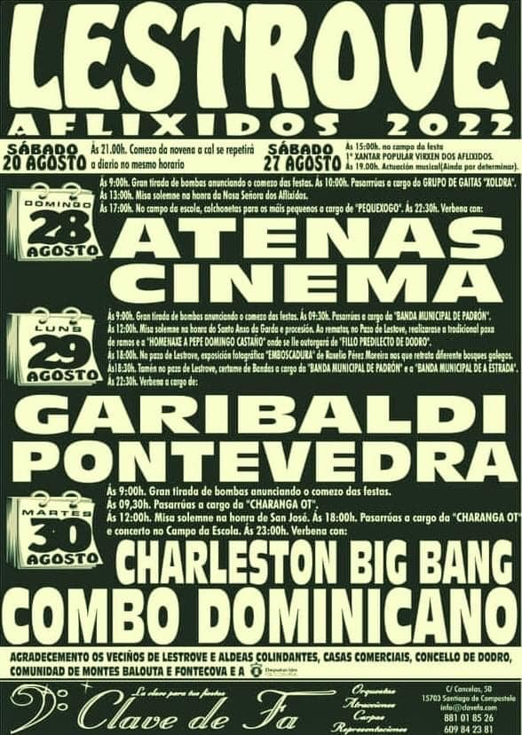

Ocio nos Concellos
Dodro
- Recepción de Reis
- San Amaro e Virxe do Belén de Bexo
- Festa da Eira da Malla de Bexo
- Carreira Solidaria
Recepción de Reis

Os reis Magos de Oriente visitan o municipio de Dodro. Melchor, Gaspar e Baltasar, cargados de agasallos, chegan a localidade coruñesa para alegría e deleite dos máis pequenos.
San Amaro e Virxe do Belén de Bexo
Os veciños da parroquia de Bexo no municipio de Dodro, celebran a festa relixiosa en honra a San Amaro e Virxe do Belén.
Festa da Eira da Malla de Bexo

O evento “Festa da Eira da Malla de Bexo” ten lugar no municipio coruñés de Dodro en Xaneiro
Carreira Solidaria

Este evento ten lugar no municipio coruñes de Dodro. Está clasificado dentro da categoria Evento deportivo.
Padrón
- Cabalgata de Reis
- Concerto de Reis
Cabalgata de Reis

Coa chegada do Nadal no municipio de Padrón organízanse diferentes actividades lúdicas e culturais para o disfrute de veciños e visitantes, onde se destaca a Cabalgata de Reis Magos coa posterior recepción aos mesmos.
Concerto de Reis
O municipio de Padrón acolle a celebración do Concerto de Reis que ten lugar no Auditorio Municipal en horario de tarde.
Rois
- Cabalgata de Reis
- Trail e Andaina Montes de Oleirón
Cabalgata de Reis
Nesta xornada os máis pequenos da casa poderán gozar da visita de Melchor, Gaspar e Baltasar no seu percorrido por todo o municipio.
Trail e Andaina Montes de Oleirón

Proba deportiva que ten lugar por sendeiros, pistas e cortalumes e nos Montes de Oleirón en Rois. Todas as personas inscritas no Trail e Andaina reciben un agasallo no momento de recoller o dorsal.
Dodro
- Entroido
- Día de Rosalía
Entroido

Os veciños do municipio de Dodro celebran a popular festa do Entroido con unha divertida xornada carnavalescas que conta con animación musical, degustación de postres típicos e sorteos.
Día de Rosalía
O municipio de Dodro recorda a figura de Rosalía de Castro cunha programación especial para conmemorar a súa vida e obra.
Padrón
- Padrón 10K
- Entroido de Extramundi
- Entroido
- Día de Rosalía de Castro
- Gala Rosalía Foliadeira
Padrón 10K
Na localidade de Padrón acollese a celebración de este evento deportivo. A proba atlética está formada por varios circuitos de diferentes distancias que os participantes deben completar en función das súas idades.
Entroido de Extramundi
A asociación de Mulleres Rurais A Carballeira de Padrón, organiza a tradicional festa de Entroido, que ten lugar na Casa da Cultura de Extramundi. Todos os asistentes poden degustar productos típicos de estas festas e participar no sorteo de regalos.
Entroido

A localidade Padrón celebra a popular festa de Entroido. Veciños e visitantes, nenos e maiores poden desfrutar e deleitarse nesta xornada co tradicional Desfile e Concurso de Disfraces, Carrozas e Comparsas.
Día de Rosalía de Castro
O municipio de Padrón recorda a figura de Rosalía de Castro cun intenso programa cultural. Entre as actividades cabe destacar unha visita teatralizada, a tradicional ofrenda de entrega do Premio de Poesía Rosalía de Castro.
Gala Rosalía Foliadeira

A asociación Cultural Rosalía de Castro na localidade de Padrón organiza unha nova edición da Gala Rosalía Foliadeira, donde os asistentes poderán desfrutar de diferentes actuacions musicais.
Rois
- A Candelaria de San Lourenzo de Seira
- Cocido de Entroido de Urdilde
- Entroido
- Entroido de Urdilde
- Día de Rosalía
- Xantar de Servia
A Candelaria de San Lourenzo de Seira

A parroquia de San Lourenzo de Seira celebra a súa festa relixosa en honra á Virxe da Candelaria. Veciños e visitantes poden desfrutar dos actos litúrxicos programados para a ocasión e deleitarse con variadas actuacións musicais.
Cocido de Entroido de Urdilde
O evento ten lugar no municipio coruñes de Rois, no pavillón de Rois. Está clasificado dentro da categoría Gastronómica.
Entroido

O municipio de Rois festexa a popular festa de Entroido coa celebración do Concurso de Disfraces
Entroido de Urdilde
Os veciños da parroquia de Urdilde, no municipio de Rois, celebran a popular festa do Entroido cunha gran xornada carnavalesca que finaliza cunha gran verbena.
Día de Rosalía
O municipio de Rois ten programadas unha serie de actividades para homenaxear a figura e obra de Rosalía de Castro
Xantar de Servia

A comisión Serviafest organiza un xantar e baile no restaurante Casa Benjamín en Vilachán.
Dodro
- Día Internacional da Muller
Día Internacional da Muller

O concello de Dodro leva a cabo unha serie de actos con motivo do Día Internacional da Muller.
Padrón
- Xornadas Gastronómicas da Lamprea
- Día Internacional da Muller
- Mercadillo Recambios de Motos e Coches Clásicos
- Festas da Pascua
- Exposición da Camelia e do Bonsai
- Carreira Popular de Pascua
- Feira Cabalar Campo da Barca
Xornadas Gastronómicas da Lamprea

Xornadas gastronómicas de exaltación da lamprea que teñen lugar en Padrón. Os asistentes a este evento gastronómico poden degustar os menús elaborados para a ocasión por parte dos locais colaboradores.
Día Internacional da Muller

O municipio de Padrón organiza diferentes actos en conmemoración ao Día Internacional da Muller.
Mercadillo Recambios de Motos e Coches Clásicos

O pavillón Polideportivo do Souto acolle a celebración de este mercadillo de recambios onde se poden adquirir pezas de coches e motos clásicas.
Festas da Pascua

A Pascua de Padrón é a festividade mais importante do municipio. Non faltan en estas festas as grandes verbenas a cargo das orquestas do momento, os actos relixosos, actividades deportivas e a tradicional Feira Cabalar.
Exposición da Camelia e do Bonsai

Esta exposición celébrase no municipio de Padrón. Os asistentes a esta exposición que se leva a cabo no Convento do Carme, poden gozar dunha gran mostra floral onde esta flor tan típica de Galicia será, xunto ao bonsai, a gran protagonista.
Carreira Popular de Pascua

Carreira que se disputa na localidade de Padrón. Está formada por varios circuitos que deberán completar os participantes en función das súas idades. A saída da carreira popular da pascua está ubicada na praza de Macías.
Feira Cabalar Campo da Barca
Tradicional feira cabalar que se celebra durante a Pascua de Padrón. Numerosos cabalos e eguas participan nos distintos concursos programados.
Rois
- Día Internacional da Muller
Día Internacional da Muller

O concello de Rois organiza unha xornada na que se conmemora o Día Internacional da Muller
Padrón
- Clásica de Pascua
- Festival de Bandas Capital do Sar
- Mes do Libro
- Andaina Bisbarra do Sar
- Día da Memoria Democrática Padronesa
Clásica de Pascua

Clásica ruta ciclista que se celebra durante as grandes Festas da Pascua padronesa. A clásica de Pascua discurre polo municipio de Padrón.
Festival de Bandas Capital do Sar
O municipio de Padrón acolle, no mes de Abril o Festival de Bandas Capital do Sar. Os asistentes a este evento poden desfrutar e deleitarse coas actuacions musicais de diferentes bandas que se dan cita en esta nova edición do festival.
Mes do Libro

Padrón celebra o Mes do Libro cunha programación que se leva a cabo ao lago de varios día na Biblioteca Municipal, dirixida a pequenos e xóvenes.
Andaina Bisbarra do Sar
A Andaina Bisbarra do Sar celébrase entre os municipios de Padrón, Dodro e Rois. A proba pode realizarse camiñando ou correndo. A competición ten o seu punto de partida na vila de Padrón.
Día da Memoria Democrática Padronesa

O concello de Padrón celebra o Día da Memoria Democrática Padronesa. O acto ten lugar no Xardín Botánico Artístico e o seu obxectivo é o reconocemento a todas aquelas persoas que loitaron pola libertade durante a guerra civil e a dictadura franquista.
Dodro
- Letras Galegas
Letras Galegas
O municipio de Dodro celebra o Día das Letras Galegas. Diferentes actividades lúdicas e culturais están presentes ao largo de este día.
Padrón
- Ruta Internacional de Motos Antigas
- San Xoán do Raio - Festa Institucional da 3ª Idade
- Día da Bicicleta
- XXX Aniversario A.C. Arreixeira
- Padrón Literario
Ruta Internacional de Motos Antigas

Os amantes do mundo do motor poden desfrutar do recorrido por diferentes municipios da comarca do Salnés, con saída e regreso na vila padronesa.
San Xoán do Raio - Festa Institucional da 3ª Idade

Os veciños da localidade de Padrón celebran a súa festa relixiosa en honra a San Xoan do Raio - XXXII Festa Institucional da 3ª Idade.
Día da Bicicleta

A vila coruñesa de Padrón acolle a celebración do Día da Bicicleta na que os participantes poden desfrutar dunha amena xornada deportiva con diversos actos programados, entre eles unha marcha ciclista.
XXX Aniversario A.C. Arreixeira
O evento "XXX Aniversario A.C. Arreixeira" ten lugar no municipio coruñés de Padrón (Pista Deportiva Arretén).
Padrón Literario

O evento ten lugar no municipio coruñés de Padrón en Maio. Está clasificado dentro da categoría Outros.
Rois
- Nosa Señora do Soutullo
- San Isidro Labrador
- Andaina do Santo Isidro - Letras Galegas
Nosa Señora do Soutullo

A festa relixiosa en honra da Nosa Señora do Soutullo celébrase na parroquia de Urdilde, no municipio de Rois. Veciños e visitantes poden asistir en esta xornada nos actos litúrxicos programados para a ocasión e deleitarse coa celebración da tradicional comida popular.
San Isidro Labrador
Festa en honor a San Isidro Labrador que se celebra no municipio de Rois. Veciños e visitantes poden desfrutar cos actos programados para a ocasión.
Andaina do Santo Isidro - Letras Galegas

Andaina que se celebra en Rois e está formada por un recorrido de 17 kilómetros con saída e meta no pavillón de Pumar-Urdilde.
Dodro
- Romaría da Cruz do Avelán
- Día da Bicicleta
- Andaina Nocturna
- Noite de San Xoán de Bustelo
- Campamentos deportivos de verán
- Festa dos Maiores
Romaría da Cruz do Avelán
A Asociación de Veciños de San Xoán de Laíño organiza esta romaría que inclúe, logo da alborada, una procesión e misa na honra á Santa Cruz seguida dun xantar campestre. Pola tarde organízanse xogos populares para grandes e pequenos e á noite verbena.
Día da Bicicleta
Un ano máis celébrase no municipio de Dodro o Día da Bicicleta. Os asistentes a esta xornada deportiva poden desfrutar dunha ruta ciclista.
Andaina Nocturna
A andaina celébrase no municipio de Dodro. O evento será con plazas ilimitadas, levarase a cabo en horario nocturno e está aberto a participación de todos os públicos.
Noite de San Xoán de Bustelo
Os veciños de Bustelo, na parroquia de Laíño no municipio de Dodro, celebran a Noite de San Xoán.
Campamentos deportivos de verán
A Deputación da Coruña pon en marcha os campamentos deportivos de verán, destinados a nenos/as empadroados nun concello da provincia da Coruña.
Festa dos Maiores
O municipio de Dodro celebra a Festa dos Maiores cunha misa e unha comida popular que está amenizada cunha actuación de un grupo musical.
Padrón
- Festival Folcklórico do Pedrón
- San Xoán de Extramundi
- Padrón con Orgullo
- San Pedro de Carcacía
Festival Folcklórico do Pedrón

O Festival Folclórico do Pedrón que ten lugar na Praza de Macías, en Padrón. O evento conta coa participación de varias formacións folclóricas e un obradoiro de pandeiro.
San Xoán de Extramundi
Os veciños do barrio padrones de Extramundi celebran un ano mais a festa de San Xoán coa tradicional degustación de sardiñas, nunha velada donde non falta a tradicional fogueira de San Xoán e a queimada.
Padrón con Orgullo

Este evento ten lugar no municipio coruñés de Padrón en Xuño. Está clasificado dentro da categoría Outros.
San Pedro de Carcacía
Festa relixiosa en honra a San Pedro e ao Santísimo Sacramento que se celebra na parroquia padronesa de Carcacía.
Rois
- Cultura Dispersa
- Festa de Sorribas
- Virxe dos Remedios de Aido y Cornes
- San Antonio de Oín
- San Xoán de Buxán
- Diververán
- San Pedro de Herbogo
Cultura Dispersa
O Concello de Rois pon en marcha Cultura Dispersa. Durante o programa sucédense as representacións e as actuacións musicais de diferentes bandas, agrupacións tradicionais e discotecas móbiles.
Festa de Sorribas
Sorribas celebra as súas festas con actuacions musicais, actividades para pequenos e actos relixosos.
Virxe dos Remedios de Aido y Cornes

Os veciños de Aido e Cornes en Rois, honran a Virxe dos Remedios. Os actos litúrxicos en honra a Santa e as grandes actuacions musicais son os actos programados.
San Antonio de Oín
Na parroquia de Oin celébrase a festa en honor a San Antonio con un acto liturxico en honor ao Santo Antonio e variadas actuacions musicais.
San Xoán de Buxán
No municipio de Rois celébrase a festa popular de San Xoán de Buxán. Os asistentes a estos días festivos poden participar nos actos relixiosos e desfrutar de variadas actuacions musicais.
Diververán
O Diververán desenvólvese nos colexios do Pumar e dos Dices en seis quendas.
San Pedro de Herbogo

Os veciños da parroquia de Herbogo celebran a festa en honor a San Pedro, San Antonio, San Roque e o Santísimo Sacramento. Os oficios relixiosos e as variadas actuacions musicais, son actos programados.
Dodro
- O Carme de Bexo
- San Antonio de Teaio
O Carme de Bexo

Na parroquia de Bexo, Dodro, celébranse as festas en honra a San Benito e a Virxen do Carmen. Os oficios relixiosos e as variadas actuacions musicais son os actos programados.
San Antonio de Teaio
En Dodro celébrase a festa na honra de San Antonio de Teaio. Os asistentes a esta festa poden participar no oficio relixioso, desfrutar con unha gran churrascada e con actuacions musicais. Tamén hai xogos infantis para os mais pequenos.
Padrón
- Camiño Branco de Rosalía
- Solpores Musicais
- San Benito de Herbón
- Feira Medieval
- Abride a fiestra
- Santiaguiño do Monte
- Gran Derbi Asnal
Camiño Branco de Rosalía
Un percorrido dedicado a Rosalía de Castro. Os Quinquilláns son os encargados de guiar aos asistentes a través dos lugares máis emblemáticos relacionados coa vida e obra da escritora universal, proporcionando unha visión profunda da súa influencia e legado.
Solpores Musicais
O atrio do Convento do Carme será o escenario perfecto para gozar do programa Solpores Musicais.
San Benito de Herbón
Os veciños da parroquia de Herbón, no municipio de Padrón, celebrarán a Festa de San Benito con actos relixiosos.
Feira Medieval
A feira medieval ten lugar no casco histórico de Padrón. Os asistentes a estas xornadas poden visitar a gran variedade de postos de artesanía que se instalan para a ocasión, e desfrutar coa animación musical e ambientación que transporta a localidade a Idade Media.
Abride a fiestra
Festival-xornada de portas abertas na Casa-Museo de Rosalía. Máis información en Casa de Rosalía
Santiaguiño do Monte

A romería campestre celébrase en Padrón para venerar a imaxe do Santiaguiño do Monte. Os asistentes poden participar na celebración dos actos relixosos e desfrutar das actuacions musicais.
Gran Derbi Asnal
O municipio de Padrón acolle o Gran Derbi Asnal. A carreira de asnos reúne edición tras edición a centos de seguidores polas calles da localidade.
Rois
- Santa Mariña, San Antonio, Santísimo Sacramento e O Carme de Ribasar
Santa Mariña, San Antonio, Santísimo Sacramento e O Carme de Ribasar
Os veciños da parroquia de Ribasar, no municipio de Rois, fan a festa en honor a Santa Mariña, San Antonio, Santisimo Sacramento e a Virxe do Carme. Os oficios relixiosos e as variadas actuacions musicais son actos programados.
Dodro
- San Campio, Santa Lucía y San Roque
- Festa dos Aflixidos de Lestrove
San Campio, Santa Lucía y San Roque
Os veciños de Santa María de Dodro celebran o mes de Agosto as festas en honor a San Campio, Santa Lucía e San Roque, donde os asistentes poden participar nas misas en horario matinal e deleitarse con grandes actuacións musicais.
Festa dos Aflixidos de Lestrove
A festa celébrase o último domingo de agosto e o luns e martes seguintes.
Padrón
- Festa do Pemento de Herbón
- Sedis Iriensis
- Macías e Elvira, tres camiños, tres destinos
- Milagroso Santo Cristo da Luz de Pazos
- Nosa Señora da Adina e San Roque de Iria Flavia
- Nosa Señora e San Roque da Ponte
- Xuntanza Vehículos Clásicos e Históricos
Festa do Pemento de Herbón
Festa gastronómica que se celebra en Herbón, Padrón o primeiro fin de semana de Agosto.
Sedis Iriensis
A historia eclesiástica de Iria Flavia explórase en "Sedis Iriensis", con Suso Martínez como guí, comezando no atrio de la Iglesia de Santa María a Maior de Iria Flavia e visitando o cemiterio de Adina. Suso Martínez leva aos asistentes a través do tempo, mostrando a evolución dunha das sedes episcopais máis antigas de Galicia.
Macías e Elvira, tres camiños, tres destinos
Percorrido, guiado por Os Quinquilláns. Os participantes reúnense no Xardín Botánico Artístico de Padrón, xunto ás fontes, para embarcarse nunha viaxe que narra as apaixonantes historias de amor de Macías e Elvira, ambientadas en escenarios de ilusión.
Milagroso Santo Cristo da Luz de Pazos
En Pazos, na parroquia de Iria Flavia celébrase a festa en honor a Milagroso Santo Cristo da Luz. Os asistentes a estas xornadas poden desfrutar coas actuacions musicais a cargo das orquestas do momento e participar nos oficios relixiosos.
Nosa Señora da Adina e San Roque de Iria Flavia
Os veciños da parroquia padronesa de Iria Flavia celebran a Nosa Señora Adina e San Roque. Os asistentes á festa poden participar nos actos relixosos, desfrutar coas actividades lúdicas programadas para a ocasion e con variadas actuacións musicais.
Nosa Señora e San Roque da Ponte
Festa relixiosa en honra a Nosa Señora e San Roque que se celebra en A Ponte. Durante os días de festa os asistentes poden desfrutar de distintas actividades tanto para nenos como adultos.
Xuntanza Vehículos Clásicos e Históricos
A xuntanza de vehículos clásicos e históricos ten lugar no municipio de Padrón e reúne aos amantes dos coches, que poden desfrutar de un agradable ruta e unha amena comida.
Rois
- Festas de Aguasantas
- San Lourenzo de Seira
- Festas de Oín
- Festas de Urdilde
Festas de Aguasantas

Os veciños de Aguasantas celebran as súas festas en honor ao Santísimo Sacramento, San Antonio, San Roque e Santa Bárbara.
San Lourenzo de Seira
O evento de San Lourenzo de Seira ten lugar en Rois. Está clasificado dentro da categoría relixiosa.
Festas de Oín

Os veciños de Oín celebran as súas festas relixosas en honor a Nosa Señora, San Roque e o Santísimo Sacramento. O cartel complétase con actos relixosos cada día para honrar aos santos e durante a noite actuacions de grandes orquestas do momento.
Fiestas de Urdilde

A parroquia de Urdilde, no municipio de Rois, celebra as súas festas relixosas en honra a Nosa Señora, San Roque, San Antonio e o Santisimo Sacramento. Durante estes días, os asistentes poden desfrutar cos actos relixosos e deleitarse con variadas actuacions musicales a cargo das orquestas do momento.
Dodro
- Festas da Virxe do Leite de Laíño
Festas da Virxe do Leite de Laíño
Festa en honor a Virxe do Bo Parto e do Leite que ten lugar na parroquia de Laíño, no municipio de Dodro. Os oficios relixiosos e as variadas actuacions musicais son os actos programados.
Padrón
- Trail Vila de Padrón - Desafío Vértice
- A Traslatio
- Nuestra Señora de la Merced de Bandín
Trail Vila de Padrón - Desafío Vértice

Carreira de atletismo que se celebra entre os municipios de Teo e Padrón. A proba dará inicio en A Agrela (Teo) e o seu fin estará ubicado na vila padronesa.
A Traslatio
A mística e espiritualidade da Traslatio é o foco de "A Traslatio". Os participantes reúnense en Fondo de Vila para seguir os pasos do lendario roteiro do traslado dos restos do Apóstolo Santiago, guiados por Suso Martínez.
Nuestra Señora de la Merced de Bandín
Os veciños de Bandín festexan as festas en honor a Nuestra Señora de la Merced, xunto cos seus veciños de Barcala. Fieis e devotos poden asistir a os oficios relixiosos en honor a Santa que ten lugar en horario de mañan e tarde.
Rois
- A Natividade de Urdilde
- Día da bicicleta
- Virxe das Dores, San Outelo e o Santísimo Sacramento de Buxán
- As Dores de Sorribas
A Natividade de Urdilde
A parroquia de Urdilde celebra a festividade da Natividade da Nosa Señora cunha misa no seu honor na iglesia parroquial e pola noite grandes verbenas con espectaculares orquestas do momento.
Día da bicicleta
O Concello de Rois volve a encherse de vida coa celebración do XIX Día da Bicicleta, un evento xa consolidado na axenda local e que cada ano reúne a veciños e visitantes nunha xornada de deporte, natureza, diversión e convivencia.
Virxe das Dores, San Outelo e o Santísimo Sacramento de Buxán

O Concello de Rois volve a encherse de vida coa celebración do Día da Bicicleta, un evento xa consolidado na axenda local e que cada ano reúne a veciños e visitantes nunha xornada de deporte, natureza, diversión e convivencia.
As Dores de Sorribas
A parroquia de Sorribas celebra as festas en honor a Virxe do Dolores.
Dodro
- Carreira Pedestre Lestrobe
Carreira Pedestre Lestrobe

O municipio de Dodro acolle a celebración da Carreira Pedestre Lestrobe que dará comezo dende a rúa Fortunato Cruces de Lestrobe.
Padrón
- Samaín
Samaín

A localidade de Padrón acolle un ano mais a festa de orixe celta de Samaín, cunha programación destinada ao disfrute dos mais pequenos da casa.
Rois
- Samaín de Liñares
Samaín de Liñares
O evento de Samaín ten lugar no municipio coruñés de Rois, no local Social de Costa. Está clasificado dentro de la categoría Samaín.
Dodro
- Magosto e Samaín de Imo
- Xantar da Asociación de Veciños de Laíño
- Día Internacional Contra a Violencia de Xénero
Magosto e Samaín de Imo
Este evento ten lugar no municipio coruñés de Dodro. Está clasificado dentro das categorías Magosto e Samaín.
Xantar da Asociación de Veciños de Laíño
O evento está clasificado dentro da categoía Outros.
Día Internacional Contra a Violencia de Xénero
O evento ten lugar no municipio coruñés de Dodro. Está clasificado dentro da categoría Outros.
Padrón
- Xornadas gastronómicas - Saborea Padrón
- Mercadillo de Artesanía, Antigüidades e Coleccionismo
- Encontro Tradición en Feminino
- Día Internacional para a Eliminación da Violencia Contra a Muller
Xornadas gastronómicas - Saborea Padrón

O municipio de Padrón celebra as Xornadas gastronómicas-Saborea Padrón.Evento culinario que permite a veciños e visitantes degustar en varios establecementos hosteleiros deliciosas tapas.
Mercadillo de Artesanía, Antigüidades e Coleccionismo
O mercadillo dedicado a artesanía, as antigüidades e coleccionismo que se celebra en Padrón.
Encontro Tradición en Feminino
O evento te lugar no municipio coruñés de Padrón, na casa Rosalía. Está clasificado dentro da categoría Otros.
Día Internacional para a Eliminación da Violencia Contra a Muller

O evento ten lugar no municipio coruñés de Padron, está clasificado dentro da categoría Otros.
Rois
- Mushing Rois
Mushing Rois
O municipio de Rois acolle o Mushing Montes Rois, no lugar da Peruca, para a modalidade de Canicros, BikeJoring e Patín.
Dodro
- Festival Folklórico de Imo
Festival Folklórico de Imo
O local social do Montiño na parroquía de Imo, pertenecente ao municipio de Dodro, acolle no mes de Decembro o Festival Folklórico onde os asistentes poden desfrutar de unha gran variedade de actuacions.
Padrón
- Festas da Santiña de Extramundi
- Concerto de Nadal
- Festival de Panxoliñas
- Festa de Fin de ano
Festas da Santiña de Extramundi

Festividade relixiosa que celebran os veciños de Extramundi en honra á Santiña, no municipio de Padrón. Todos os asistentes poderán participar nos actos relixiosos e gozar coas actuacións musicais.
Concerto de Nadal

Coa chegada do Nadal no municipio de Padrón organízanse diferentes actividades lúdicas e culturais para o disfrute de veciños e visitantes.
Festival de Panxoliñas
O festival de Panxoliñas celébrase no Auditorio Municipal de Padrón.
Festa de Fin de Ano

O evento ten lugar no municipio coruñés de Padrón, no aparcamento Feira Maquinaria. Está clasificado dentro da categoría Festas populares.
Rois
- Santa Lucía de San Lourenzo de Seira
- Santo Tomás de Sorribas
Santa Lucía de San Lourenzo de Seira
O evento de San Lourenzo de Seira ten lugar en Rois. Está clasificado dentro da categoría relixiosa.
Santo Tomás de Sorribas

Celébrase a festa en honor Santo Tomás en Sorribas. Durante varias xornadas os asistentes poden asistir aos actos relixiosos e desfrutar con varias actuacions musicais.